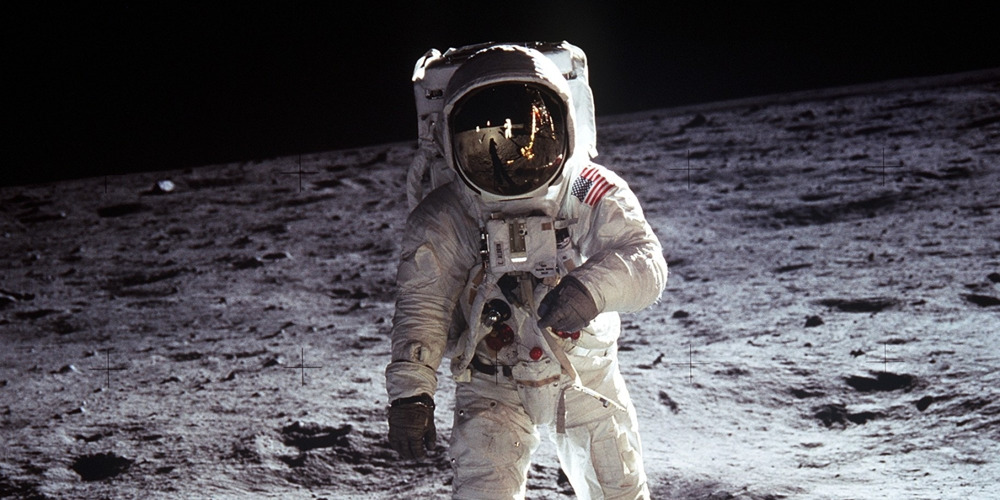

We'll get to the details of what's around here, but it looks like a collection of just about every variety of shape, angularity, granularity, about every variety of rock you could find. The colors—Well, it varies pretty much depending on how you're looking relative to the zero-phase point. There doesn't appear to be too much of a general color at all. However, it looks as though some of the rocks and boulders, of which there are quite a few in the near area, it looks as though they're going to have some interesting colors to them. Over.
